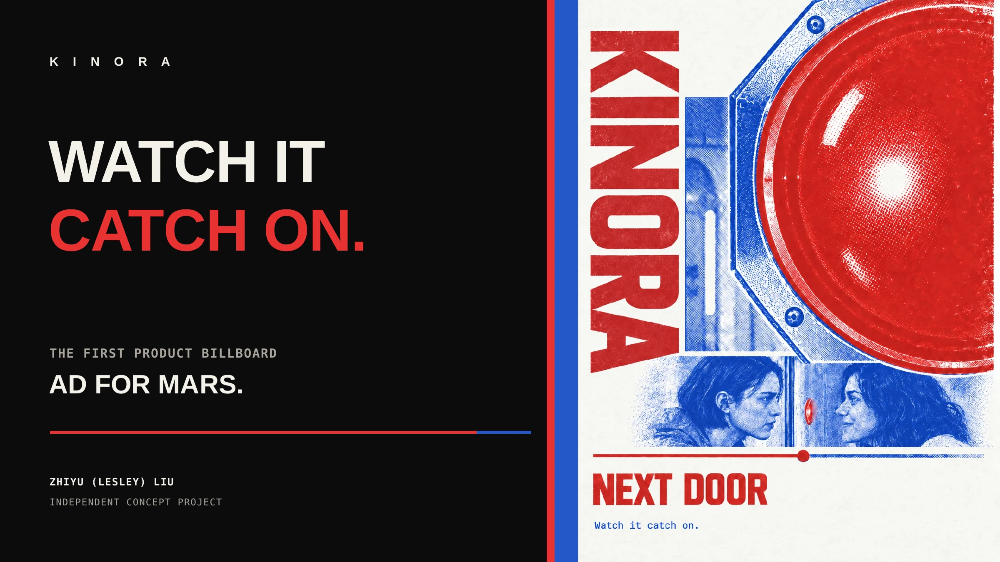
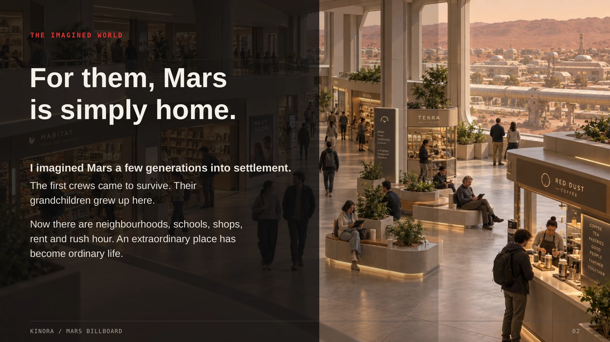
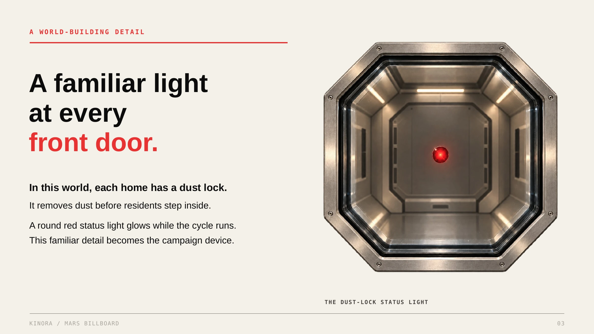
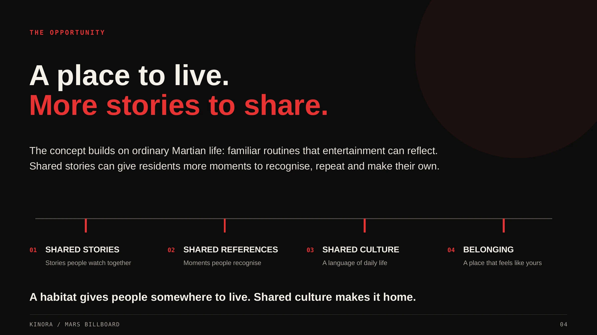
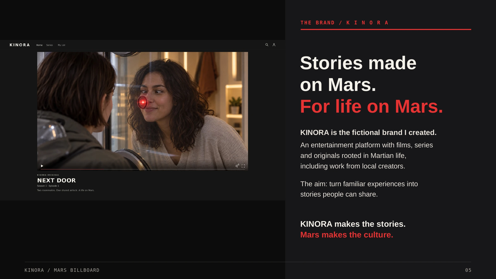
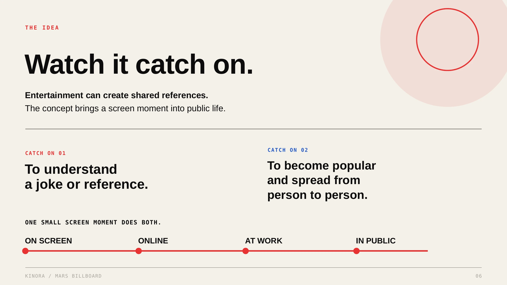
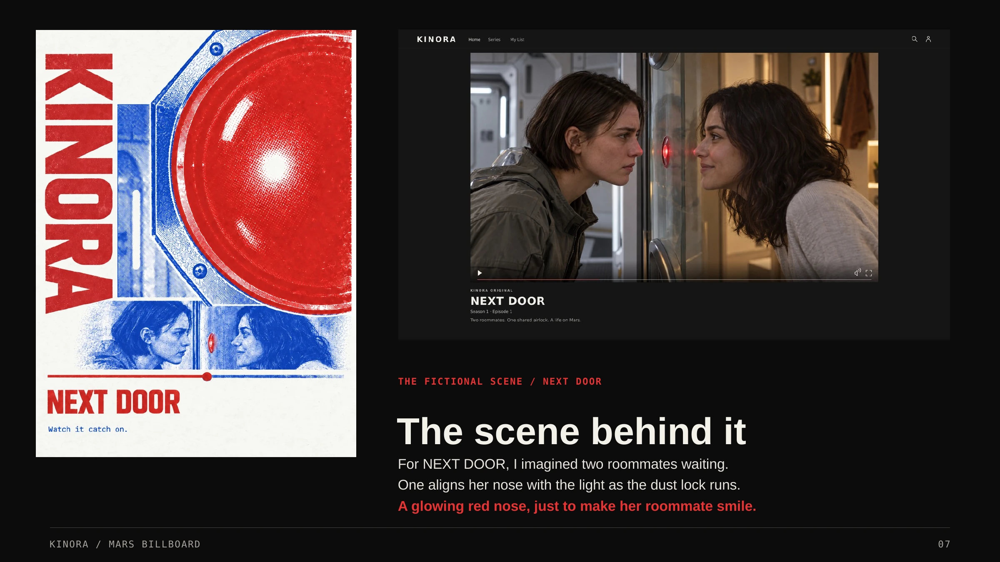
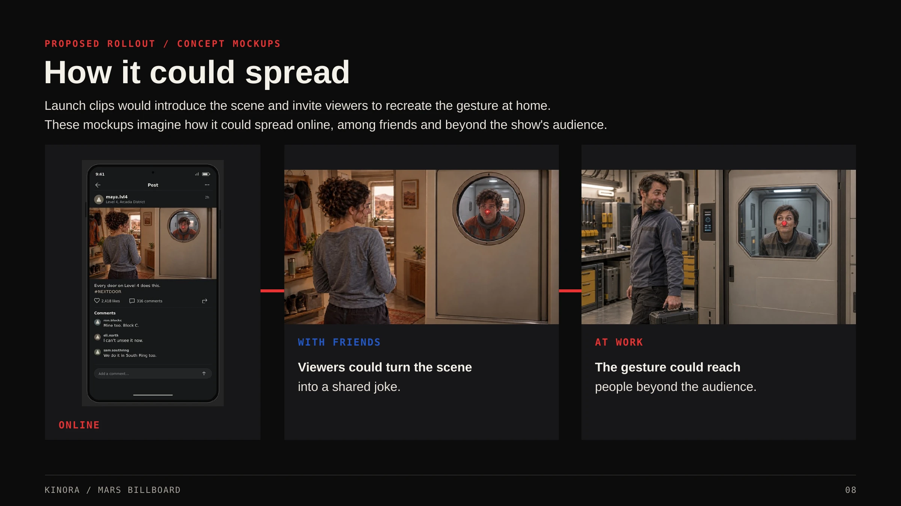
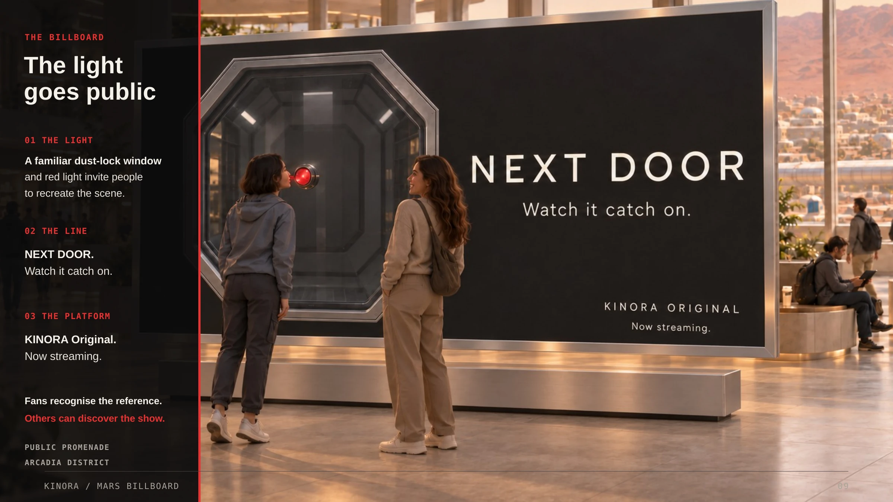
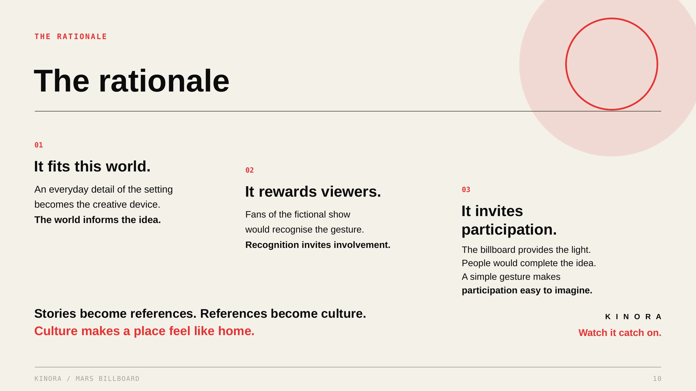

KINORA
Fictional brand & advertising campaign
A billboard concept for an imagined Mars entertainment platform, turning an everyday red light into a shared cultural reference.
Concept development, copywriting & art direction
Campaign / 10 pagesOpen PDF ↗
Scroll to explore. Tap a page to open the full-size image.

K I N O R A WATCH IT CATCH ON. THE FIRST PRODUCT BILLBOARD AD FOR MARS. ZHIYU (LESLEY) LIU INDEPENDENT CONCEPT PROJECT
THE IMAGINED WORLD For them, Mars is simply home. I imagined Mars a few generations into settlement. The first crews came to survive. Their grandchildren grew up here. Now there are neighbourhoods, schools, shops, rent and rush hour. An extraordinary place has become ordinary life. KINORA / MARS BILLBO ARD 02
A WORLD-BUILDING DETAIL A familiar light at every front door. In this world, each home has a dust lock. It removes dust before residents step inside. A round red status light glows while the cycle runs. This familiar detail becomes the campaign device. THE DUST-LOCK STATUS LIGHT KINORA / MARS BILLBO ARD 03
THE OPPORTUNITY A place to live. More stories to share. The concept builds on ordinary Martian life: familiar routines that entertainment can reflect. Shared stories can give residents more moments to recognise, repeat and make their own. 01 SHARED STORIES 02 SHARED REFERENCES 03 SHARED CULTURE 04 BELONGING Stories people watch together Moments people recognise A language of daily life A place that feels like yours A habitat gives people somewhere to live. Shared culture makes it home. KINORA / MARS BILLBO ARD 04
THE BRAND / K I N O R A Stories made on Mars. For life on Mars. KINORA is the fictional brand I created. An entertainment platform with films, series and originals rooted in Martian life, including work from local creators. The aim: turn familiar experiences into stories people can share. KINORA makes the stories. Mars makes the culture. KINORA / MARS BILLBO ARD 05
THE IDEA Watch it catch on. Entertainment can create shared references. The concept brings a screen moment into public life. CATCH ON 02 CATCH ON 01 To understand To become popular a joke or reference. and spread from person to person. ONE SMALL SCREEN MOMENT DOES BOTH. ON SCREEN ONLINE AT WORK IN PUBLIC KINORA / MARS BILLBO ARD 06
THE FIC TIONAL SCENE / NEXT DOOR The scene behind it For NEXT DOOR, I imagined two roommates waiting. One aligns her nose with the light as the dust lock runs. A glowing red nose, just to make her roommate smile. KINORA / MARS BILLBO ARD 07
PROPOSED ROLLOUT / CONCEPT MOCKUPS How it could spread Launch clips would introduce the scene and invite viewers to recreate the gesture at home. These mockups imagine how it could spread online, among friends and beyond the show's audience. WITH FRIENDS AT WORK Viewers could turn the scene The gesture could reach into a shared joke. people beyond the audience. ONLINE KINORA / MARS BILLBO ARD 08
THE BILLBOARD The light goes public 01 THE LIGHT A familiar dust-lock window and red light invite people to recreate the scene. 02 THE LINE NEXT DOOR. Watch it catch on. 03 THE PLATFORM KINORA Original. Now streaming. Fans recognise the reference. Others can discover the show. PUBLIC PROMENADE ARCADIA DISTRICT KINORA / MARS BILLBO ARD 09
THE RATIONALE The rationale 01 It fits this world. 02 An everyday detail of the setting It rewards viewers. 03 becomes the creative device. The world informs the idea. Fans of the fictional show It invites would recognise the gesture. participation. Recognition invites involvement. The billboard provides the light. People would complete the idea. A simple gesture makes participation easy to imagine. Stories become references. References become culture. K I N O R A Culture makes a place feel like home. Watch it catch on. KINORA / MARS BILLBO ARD 10Independent concept project. AI-assisted imagery.
Back to desktop